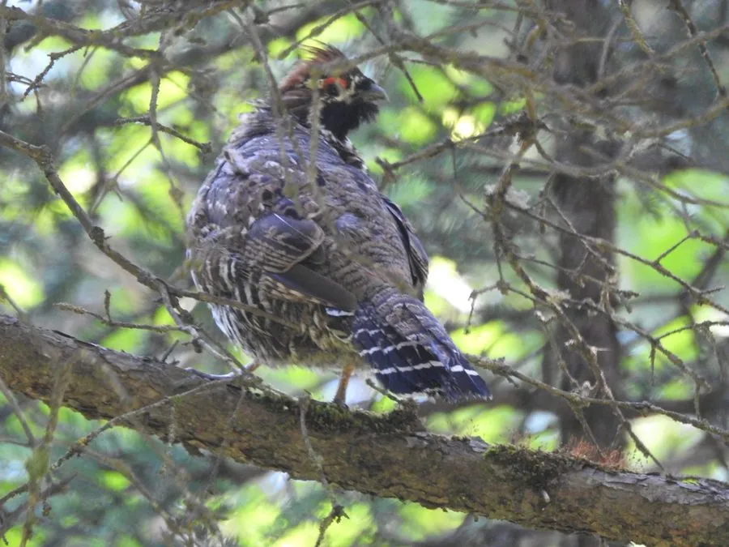

鸟类 · 动物界
斑尾榛鸡 Tetrastes sewerzowi

中国中部高山针叶林特有的榛鸡，尾羽带黑白斑纹、喉部黑而镶白，分布区狭窄且种群零散，是中国一级保护鸟类。
- 分类
- 门脊索动物门纲鸟纲目鸡形目科雉科属榛鸡属
- 栖息环境
- 海拔 2500–3800 米的高山针叶林、混交林与杜鹃灌丛
- 地理分布
- 中国甘肃南部、青海东部、四川北部、西藏东部与陕西南部的高山区
- 保护级别
- IUCN 近危（NT）；中国国家一级保护动物
物种志
斑尾榛鸡体长 30–36 厘米，体重 250–400 克，外形与花尾榛鸡相似但更小。通体灰褐，密布黑褐与白色细斑，喉部黑色并镶白色边缘，眼上有浅色眉纹；尾羽较长，具黑白相间的斑纹，末端有一道宽阔的黑色横带，故得名“斑尾”。雌鸟喉部黑斑较小，整体色调更偏棕。
它们是中国中西部山地的特有种，栖息于海拔 2500–3800 米的高山针叶林、针阔混交林与杜鹃灌丛，尤其依赖有云杉、冷杉和桦木的林下植被。多成对或家族群活动，性极隐蔽，善在地面疾走，遇险时常静伏不动，直到人走到近前才突然起飞。食性以植物为主，取食桦树与柳树的芽、柔荑花序、种子和浆果，也吃昆虫。繁殖期 5–6 月，在地面倒木或灌丛下筑巢，每窝 5–8 枚卵，雌鸟孵卵约 25 天。森林采伐与放牧导致的栖息地退化是其最大威胁。
形态与习性
- 体长约 30–36 cm，体重 250–400 g
- 食性桦、柳的芽与柔荑花序、种子、浆果，兼食昆虫
- 繁殖5–6 月地面筑巢，每窝 5–8 枚卵，孵卵约 25 天
- 栖息海拔约 2500–3800 m 的高山针叶林
- 识别特征尾羽具黑白斑纹，末端有一道宽阔黑带
- 种群现状全球数量估计不足 1 万只，分布区高度碎片化
- 寿命野外约 5–7 年
趣味知识
- 斑尾榛鸡的尾羽末端有一道粗黑带，展开时像镶了黑边。
- 它是中国中部高山针叶林的特有种，全球只在几片山区能找到。
- 遇到人靠近时它往往一动不动，直到几乎踩到才轰然起飞。